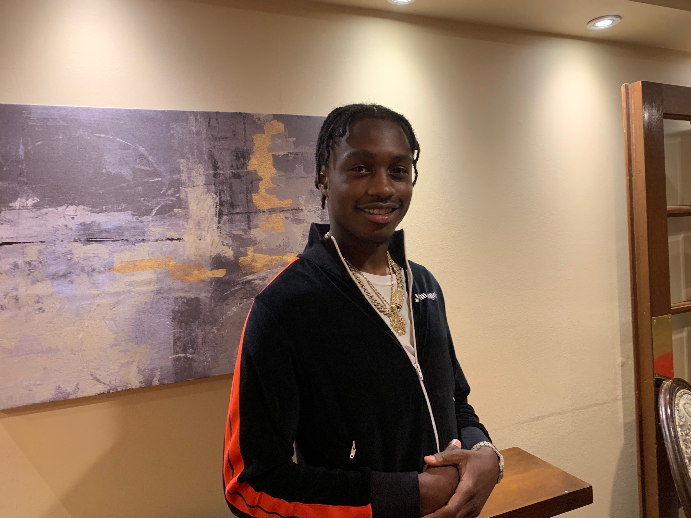

ライブPolo G
Polo G & Lil Tjay大阪公演、10月26日の開催中止を発表
10月26日にZepp Osaka Baysideで予定されていた「FORCE FESTIVAL PRESENTS “Polo G & Lil Tjay” AFTER LIVE SHOW」は、公演中止となった。

Polo G in 2022／Lou Wop · CC BY 3.0（出典）／動画からの切り出し画像／当サイトでの加工なし

Lil TJ／Bearian · CC BY-SA 4.0（出典）／原画像から加工なし／写真はCC BY-SA 4.0で提供
イープラスの公演中止案内は、Lil Tjayの出演キャンセルに伴って協議した結果、公演を中止したと説明している。対象は10月26日、17時開場・18時開演予定だったZepp Osaka Bayside公演。
出演予定者にはPolo G、Lil Tjay、G-KID、JIN DOGG、MIKADO、Tiji Jojo、YOU THUG、YZERRが名を連ねていた。払い戻しの案内はイープラスの公演中止ページに掲載されている。